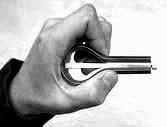
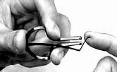
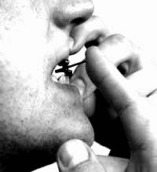
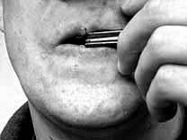

Ağız Kopuzuna Hızlı Başlangıç
Ağız kopuzu ile ilgili giriş seviyesinde çalma metotları, videolar, şarkılar, bağlantılar vb. paylaşacağım. Şimdilik hızlı bir başlangıç yapalım. Sağlaklara göre anlatacağım. Solaklar tam tersini yapacaklar.1.Adım
 Ağız kopuzunun çerçeveyi (dış kısım) sol elinizle tutun. Çelik yayın bükük kısmı karşı tarafa bakacaktır. Çelik yay serbestçe salınacağından, şimdilik yaya dokunmayın. Ve aynı nedenle çerçevenin paralel uçlarını birbirine doğru bükmeyin. Aksi halde çelik yay sıkışacak ya da dızlama yapacak.2.Adım
 Dişlerinizi biraz aralayın ve çerçevenin uçlarını dişlerinize bastırın. Dişlerinizin açıklığı çelik yayın serbestçe salınmasına izin vermelidir.3.Adım
 Fazla bastırmadan, rahat bir şekilde dudaklarınız ağız kopuzunu tutsun.4.Adım
 Sağ elinizin işaret parmağı ile çelik yayın bükük en ucuna, ağızınızın tarafından dışarı doğru hareket ile dokunun. İlk donuşta iyi bir ses çıkmaması doğaldır :) korkmayın. Pratik yaptıkça daha iyi olacaktır. Herşeyi doğru uyguladıysanız (çelik yay, diş,dudak ya da çeçevenin paralel uçlarına değmiyorsa), çelik yay salınacak ve ses çıkaracaktır. İyi olduğunu düşünüyorsanız daha kuvvetli yaya vurabilirsiniz.5.Adım
Artık müzik yapmaya başlayabiliriz. Yaya ritmik vurun. Farklı hızlarda nefes alıp vererek veya dilinizi oynatarak sesin değişeceğini duyacaksınız.6.Adım
İyi eğlenceler...Fotoğraflar - http://www.davidholt.com/details/music/folk-instruments/jaw-harp/
21.06.14 eski blogumdan aktarılan